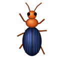

O jogo e o objetivo
O jogo e o objetivo
Colony é um jogo de estratégia econômica sobre duas colônias de formigas: a sua e a de um rival controlado pelo computador. O formigueiro inimigo fica espelhado em relação ao centro do campo. Sua tarefa: coletar recursos com habilidade, desenvolver a colônia e quebrar o rival.

Vitória e derrota
- Vitória — o inimigo não tem mais nenhuma operária (incluindo os ovos na incubadora) e tem menos de 5 de comida, então não pode chocar uma nova.
- Derrota — o mesmo aconteceu com sua colônia.
- Construções não podem ser destruídas: as colônias só matam as formigas uma da outra.
 Início da partida
Início da partida
No menu principal há duas formas de começar:
- Novo jogo — o início habitual:
 25 de comida e
25 de comida e  10 de madeira.
10 de madeira. - Modo muitos recursos — os dois lados recebem de saída 1500 de comida e 500 de madeira: construção, pesquisa e combate começam na hora.
No modo muitos recursos, enquanto você ainda tiver comida (pelo menos 10), há uma corrida armamentista: compre mais guerreiras do que o inimigo tem, e ele choca na hora guerreiras de mesma força total (contando as Guerreiras fortes), sem gastar nada em melhorias enquanto isso. Com forças iguais, em melhorias e armazéns ele gasta só o que tem além das suas reservas. Assim, a vitória mais rápida não se consegue com uma investida precoce.
Durante uma partida, o menu também mostra Continuar e Recomeçar (o mesmo mapa desde o início). Há ainda as Estatísticas — seus contadores de todas as partidas — e as Classificações da Steam das vitórias mais rápidas.
Depois abre-se a tela de ajustes da partida; o jogo começa com Começar. A escolha fica salva.


Dificuldade
A dificuldade muda apenas o rival do computador:
| Nível | O que muda |
|---|---|
| Explorador | O inimigo não cria guerreiras, não coloca armadilhas e nunca ataca — explore o campo e a economia com calma. Neste modo não há conquistas. |
| Fácil | O inimigo coleta 30% menos, sem armadilhas, e não ataca antes de 6 minutos. |
| Normal | O inimigo coleta 10% menos e não ataca antes de 3 minutos. |
| Difícil | O inimigo joga com força total desde o início. |
Mapa e visibilidade
- Mapa: Pequeno (800×600), Médio (1152×864), Grande (1440×1080), Enorme (1728×1296). Num mapa maior há proporcionalmente mais pedras, pântanos e grama.
- Névoa de guerra — só se vê o que está perto do seu formigueiro, dos seus armazéns e das suas formigas. O terreno explorado fica semivisível; um formigueiro inimigo encontrado e seus armazéns permanecem no mapa. Explosões e efeitos na névoa não são vistos. Cada nível do Salto genético aumenta o alcance de visão.
- Mapa inteiro visível — com a roda do mouse dá para afastar até ver o campo inteiro. Sem esta opção, não além de 800×600 — o campo rola.
Ajustes do mundo
Cada elemento do ambiente e da fauna pode ser ligado ou desligado, com a quantidade escolhida (Poucos / Normal / Muitos): pedras, pântanos, tocos, lagos, riacho, cavernas, cogumelos, alfaiates, caracóis (só com lagos ou riacho), carabídeos, aranhas, louva-a-deus, formigas ruivas, besouros-bombardeiros. «Padrão» restaura o mundo habitual. Embaixo à direita — uma prévia do mapa ao vivo.
Escolher o lugar do formigueiro
Depois de Começar, a câmera sobrevoa o campo, e então você escolhe com um clique o lugar da sua colônia. Hexágonos marcam os lugares permitidos; o formigueiro não pode ficar perto demais do centro nem das bordas. O inimigo aparece espelhado.
A primeira coisa a fazer é chocar pelo menos uma operária (dica na parte de baixo da tela).

 Interface
Interface

- Construir — chocar formigas e construções.
- Tecnologia — melhorias, automação e armadilhas (depois de construir o laboratório).
- Comida e Madeira — suas reservas.
- Zona — desenhar zonas de coleta: On — adicionar, Off; teclas = / -.
- Ataque — painel de ordens e ataque. Modo — silvicultura, micocultura e conduta das unidades.
- À direita — o tempo de jogo. Embaixo — a linha de dicas e o painel das formigas selecionadas.
Câmera
- Roda do mouse — aproximar/afastar em direção ao cursor (até 2,5×).
- Botão direito pressionado — arrastar o campo («pegar e puxar»); um clique direito curto continua cancelando a seleção.
- Setas — rolar o campo; botão direito (ou do meio) pressionado — arrastar o campo.
- Home — voltar ao seu formigueiro.
Dicas ao passar o mouse
Aponte para uma formiga, planta, cogumelo, armadilha, animal ou formigueiro — aparece um cartão: saúde, idade, crescimento, amadurecimento, apodrecimento, carga da armadilha, as reservas de um ninho de formigas ruivas etc.
 Recursos
Recursos
Comida
Cresce a partir de sementes: um grupo de plantas maduro dá novas sementes. É coletada pelas operárias. Comida que fica muito tempo sem ser coletada lenhifica e vira madeira.
Madeira
É coletada pelas construtoras. Surge da comida que ficou muito tempo sem ser coletada e cresce como junco na margem dos lagos. Necessária para o laboratório, os armazéns, as guerreiras e parte da pesquisa.
 Cogumelos
Cogumelos
Outra fonte de comida após a pesquisa Novo tipo de recurso. Veja a seção Cogumelos.
Coleta e entrega
- As formigas só coletam recursos nas zonas de coleta (ou por ordem direta) e levam a carga ao armazém ou formigueiro mais próximo.
- Com carga, uma formiga anda 30% mais devagar.
- Formigas livres sem nada para coletar piscam como manchas sobre o formigueiro.
Trilhas de formigas
Onde as formigas da colônia passam muito, a grama é pisoteada até virar uma trilha de areia granulada. Na própria trilha as formigas andam mais rápido — até +15%. Uma trilha abandonada é coberta pela grama em poucos minutos. As trilhas do inimigo só se veem onde você vê o campo.
 Unidades
Unidades
As formigas são chocadas no painel Construir: primeiro aparece um ovo na incubadora ao redor do formigueiro (até 16 de uma vez), e dele sai a formiga. Shift + tecla encomenda 16 formigas de uma vez.
| Unidade | Preço | Função |
|---|---|---|
| Operária E | 5 | Coleta comida e cogumelos. 1 ponto de saúde. |
 Construtora A Construtora A | 3 2 | Coleta madeira e junco. 1 ponto de saúde. No Novo jogo, nem você nem o inimigo podem chocar construtoras nos primeiros 30 segundos após o início (a primeira operária), para que a partida comece de forma justa; no modo muitos recursos, imediatamente. |
 Guerreira W Guerreira W | 35 10* | Ataque e defesa. Saúde 10 (15/20/25 com Guerreiras fortes). Requer o laboratório. |
* A cada nível de Guerreiras fortes a guerreira fica mais cara: 35/15, 45/25, 50/30. A melhoria vale só para guerreiras novas.

Limite e idade
- No máximo 40 operárias e 40 construtoras; cada armazém aumenta cada limite em 10. Guerreiras não têm limite.
- As formigas envelhecem e morrem de velhice — a barra de idade no cartão vai do verde ao vermelho. No pântano envelhecem 10 vezes mais rápido.
- Em ataque, as formigas andam 30% mais rápido que o normal.
Operárias e construtoras também mordem
Por ordem, operárias e construtoras podem ser enviadas contra formigas inimigas e animais. Mordem fraco (nos animais, quatro vezes menos que uma guerreira), e a mordida delas não melhora — um último recurso quando não há guerreiras.
 Construções e armadilhas
Construções e armadilhas
 Formigueiro
Formigueiro
A construção principal: é colocada antes do início da partida. Para cá são trazidos os recursos, e aqui nascem as formigas.
 Laboratório L
Laboratório L
Um anexo do formigueiro, sem lugar a escolher. Libera guerreiras, pesquisa e armadilhas.
Preço: 35
Armazém S
Um ponto de entrega próximo para os recursos e +10 ao limite de operárias e construtoras. Até 5 armazéns, Mais armazéns adiciona outros.
Preço: 25
 Armadilha B
Armadilha B
Uma mina: explode quando uma formiga alheia ou um animal pisa nela.
Preço: 1 1
Onde se pode pôr um armazém
- Só ao alcance do formigueiro ou de outro armazém seu — a rede de armazéns cresce passo a passo (o alcance aparece em círculos tracejados).
- Não perto demais de recursos em crescimento.
- Não sobre tocos, cogumelos, lagos e junco, o riacho, ninhos de formigas ruivas, armadilhas, comida, madeira nem teias de aranha. Na margem de um lago, pode.
- O inimigo segue as mesmas regras.
Se um armazém, uma armadilha ou uma zona não pode ser colocado em algum lugar, aparece perto do cursor uma dica com o motivo: «Perto demais de um formigueiro», «Só dentro das suas zonas», «Nada para coletar aqui» etc.
Armadilhas
- São colocadas só dentro das suas zonas de coleta, na sua metade do campo — enquanto você escolhe o lugar, as zonas aparecem no campo.
- Depois de colocada, a armadilha carrega (cerca de 17 segundos, o progresso aparece no cartão) e então fica armada.
- Dispara com formigas inimigas, vida selvagem e formigas ruivas. A explosão mata as formigas ao redor, uma aranha, um carabídeo, um alfaiate; de um louva-a-deus tira 60 de saúde.
- As armadilhas do inimigo são igualmente perigosas. O inimigo coloca armadilhas a partir da dificuldade Normal.
- A automação Armadilhas as coloca sozinha.
 Pesquisa
Pesquisa
O painel Tecnologia T abre depois de construir o laboratório. À esquerda as melhorias (três níveis), à direita a automação.

| Melhoria | Nív. I | Nív. II | Nív. III | Efeito |
|---|---|---|---|---|
 Melhor colheita Melhor colheita | 50 | 80 | 120 | As plantas crescem mais rápido e há mais delas. |
 Manobra Manobra | 35 | 20 | 70 | Libera o tipo de ataque Manobra — as guerreiras contornam o inimigo em arco e atacam pelo flanco; mais rápido a cada nível. |
| Salto genético | 75 | 85 | 95 | Velocidade das formigas ×1,2 / ×1,4 / ×1,6 e alcance de visão na névoa. |
 Guerreiras fortes Guerreiras fortes | 35 20 | 45 30 | 50 7 | As guerreiras novas têm 15 / 20 / 25 de saúde em vez de 10. |
 Ampliar armazém Ampliar armazém | 15 5 | 45 8 | 60 11 | Criação de comida e madeira: +5% / +10% / +18% de renda dos armazéns. |
 Mais armazéns Mais armazéns | 30 15 | 50 25 | 75 40 | +1 armazém além de cinco por nível. |
 Novo tipo de recurso Novo tipo de recurso | 60 | 125 | 180 | I — as operárias coletam cogumelos, dá para pôr zonas sobre cogumelos; II — os cogumelos da nossa metade crescem 20% mais rápido; III — crescem 20% mais. |
— comida, — madeira. O inimigo pesquisa as mesmas tecnologias.
 Automação
Automação
É comprada uma vez na coluna direita do painel Tecnologia. Depois, a maioria se liga e desliga com o botão Auto / Manual.
Zonas
As zonas de coleta são colocadas automaticamente ao redor dos recursos.
25 comida
 Silvicultura
Silvicultura
Parte do matagal automaticamente não é coletada — vira madeira.
10 madeira
 Micocultura
Micocultura
Nos micélios da sua metade fica ~40% dos cogumelos — os micélios crescem mais rápido. Requer Novo tipo de recurso I.
30 comida
 Construção
Construção
Choca automática: a colônia choca sozinha as formigas necessárias.
10 comida
 Ataque
Ataque
Ataque planejado: a colônia reúne guerreiras sozinha e ataca quando está forte o bastante.
25 comida
 Armadilhas
Armadilhas
Autoarmadilhas: as armadilhas são colocadas sozinhas enquanto houver recursos.
10 comida
Modo e zonas de coleta
Zonas de coleta
Clique em Zona (ou =) e desenhe zonas no campo — as formigas coletam dentro delas. - — remover zonas. Se os recursos estão longe de um armazém, é melhor não pôr zona ali até haver um armazém por perto.
O painel Modo
- Silvicultura F — marque as plantas que as operárias não vão tocar: elas crescerão até virar madeira. «+» no cursor — marcar, «−» — tirar a marca.
- Micocultura G — da mesma forma marcam-se os cogumelos que não serão coletados.
- Conduta das unidades:
- Atacar todos — as guerreiras livres protegem as operárias: atiram-se sobre qualquer animal ou inimigo que as tenha atacado.
- Colheita — todas as forças na coleta de recursos.

 Ordens e seleção
Ordens e seleção
Seleção
- Moldura: segure o botão esquerdo no campo e trace uma moldura verde — as formigas dentro são selecionadas (guerreiras, se houver; senão construtoras; senão operárias).
- Tab — selecionar todas as suas guerreiras.
- As selecionadas aparecem embaixo à esquerda: um quadro por formiga com barra de saúde, a quantidade e a força total.
- Botão direito — cancelar a seleção e fechar os painéis abertos.
- As formigas selecionadas obedecem só a você: a defesa da colônia, Atacar todos e o autoataque não as pegam.
Onde se pode clicar
No campo
As formigas vão até o ponto (uma linha tracejada animada) e esperam lá.
 Posto
Posto
Um segundo clique perto do mesmo ponto, quando as guerreiras já estão lá, cria um posto: as guerreiras guardam o lugar, batem nos inimigos que se aproximam e voltam. Sobre o ponto ergue-se uma bandeira, e o anel tracejado «respira». Só uma nova ordem a essas guerreiras desfaz o posto. Antes do segundo clique, uma bandeira de dica cai repetidamente sobre o ponto.
Na comida / num cogumelo
As operárias coletam a comida próxima, mesmo fora das zonas, e levam para casa. Um cogumelo, elas roem (se os cogumelos estiverem pesquisados).
 Na madeira
Na madeira
As construtoras coletam a madeira próxima.
 Num inimigo / animal
Num inimigo / animal
As selecionadas atacam o alvo (círculo tracejado vermelho). Se ele morrer, passam para os filhotes do ninho; senão, esperam.
A mira verde no cursor mostra para onde as formigas podem ser enviadas. As formigas cumprem a ordem mesmo depois de cancelada a seleção e depois voltam ao trabalho habitual. Ataques ordenados com clique num inimigo também aparecem nos gráficos.
 Ataque
Ataque
O painel Ataque:
- Em cima — o tipo das suas formigas (um clique muda), embaixo — o tipo de formigas inimigas a atacar.
- «‹ 1 ›» — quantas formigas enviar (segurar — rápido). As escolhidas ficam marcadas com um anel.
- Ataque — enviar o destacamento.
- Tipo de ataque: Direto — de frente; Manobra — em arco contornando (requer a pesquisa Manobra).
- Ataque constante — as guerreiras são enviadas sem parar contra o inimigo; o painel fica aberto e mostra quantas estão «atacando».

Combate
- A saúde de todos é medida nas mesmas unidades: operária e construtora — 1, guerreira — 10…25.
- A saúde de uma guerreira aparece nas pétalas ao seu redor: vermelho-alaranjadas nas suas guerreiras, azuis nas do inimigo.
- Com o painel Ataque fechado, as formigas que esperam voltam ao trabalho.
- Quando a colônia é atacada, toca um alarme e a música muda para a de combate.

 Ambiente
Ambiente
| Objeto | Transitável | Particularidades |
|---|---|---|
| Pedras | Não | São contornadas; junto às pedras as aranhas tecem suas teias. |
 Pântanos Pântanos | Sim, 4 vezes mais devagar | As formigas envelhecem 10 vezes mais rápido. Por perto, os cogumelos crescem mais rápido e mais densos. |
 Tocos Tocos | Sim | Sob alguns — tocas de carabídeos; junto aos tocos crescem cogumelos. Não se pode pôr armazém sobre um toco. |
 Cogumelos Cogumelos | Sim, duas vezes mais devagar | Não se pode pôr armazém sobre um cogumelo. |
 Lagos Lagos | Não (água) | Margem fértil: as plantas crescem mais rápido e dão mais sementes. O junco na borda é madeira pronta e volta a crescer rápido. Em cada lago vive um alfaiate; da água saem caracóis. |
 Riacho Riacho | Só pelas travessias | Atravessa o campo. As travessias são de pedras ou troncos, com 3 fileiras de largura; formigas e animais as usam. |
 Teia de aranha Teia de aranha | Sim, quase 3 vezes mais devagar | A dona da teia se atira sobre quem se aproxima. |


Há de um a quatro lagos, e os dois lados recebem igual: um no centro, os pares espelhados. Se o mapa tem riacho, dele saem braços laterais para os lagos próximos — canais estreitos que desembocam no lago (espelhados nas duas metades). Um canal, como o riacho, não pode ser atravessado: contorna-se o lago.
 Cavernas
Cavernas


O campo pode ter cavernas (ajustes do mundo: Poucos / Normal / Muitos — 2, 4 ou 6, em pares: uma em cada metade). Cada uma tem seu aspecto: pedra, terra preta, argila, sob as raízes, arenito, calcário, turfa; lá dentro brilha uma luz — diferente em cada caverna.
- Selecione 10 operárias ou construtoras e clique na caverna: vão exatamente as 10 mais próximas. Com menos de 10 a exploração não começa. Guerreiras não entram em cavernas.
- Lá dentro as formigas continuam sendo da colônia (contam no limite e na vitória), mas não coletam nada. A exploração leva cerca de 90 segundos; sobre a caverna aparece um anel de progresso.
- O resultado: sorte — 500 de comida, ou 200 de madeira, ou 300 de comida e 75 de madeira; nada — as formigas simplesmente saem; azar — as formigas somem. De qualquer forma a entrada desaba: a caverna está explorada e não brilha mais; alguns minutos depois some de vez.
- Se uma das dez morrer no caminho, as outras voltam e a caverna fica sem explorar.
- O inimigo também explora as cavernas da sua metade quando pode dispensar formigas: com muita comida manda operárias; senão, construtoras.
- Enquanto a expedição está lá dentro, sobe fumaça da caverna.
- Todas as cavernas de um mapa são diferentes: o tipo, a luz e a cor dela não se repetem. Ao redor de cada uma há poeira da cor da sua terra.
- Os resultados estão na linha «Cavernas» do resumo da partida e em menu principal → Estatísticas (onde também se vê quais dos 7 tipos você já explorou). As cavernas têm três conquistas: «Tesouro», «Todas as profundezas» e «Nenhuma para trás».
 Árvores
Árvores

No campo crescem árvores — carvalhos e pinheiros (nas configurações do mundo: Poucos — uma árvore no meio, partilhada pelos dois lados; Normal — uma em cada metade; Muitos — três em cada metade). No início da partida são pequenas e crescem aos poucos.
- Os arquitetos roem por conta própria os galhos das árvores da sua metade (até 3 por árvore). Um galho roído cai e deixa um monte de madeira: os arquitetos levam-na para casa como sempre, sem zona de coleta. Quanto maior a árvore, mais madeira dá um galho.
- Um galho roído volta a crescer após alguns minutos — pequeno no início.
- De vez em quando a árvore balança ao vento: dos galhos que ninguém rói caem bolotas (carvalho, comida) ou pinhas (pinheiro, madeira). Uma bolota ou uma pinha é levada por um arquiteto; se ele for morto, a carga fica no chão e outro a apanha.
- A escolha é sua: marque uma árvore com a ferramenta «Florestas» e os arquitetos param de roê-la — ela só dará frutos. O inimigo decide sozinho: enquanto tiver madeira suficiente, poupa as suas árvores pelos frutos. A silvicultura automática não mexe nas árvores nem muda a sua escolha.
- Vespas. Com o tempo, uma árvore crescida ganha um ninho de vespas
 . As vespas
. As vespas  voam em círculo sobre a árvore e picam qualquer formiga embaixo: um operário ou arquiteto morre na hora, um guerreiro fica ferido. No alto, a vespa está fora de alcance — os guerreiros só mordem a que mergulha para picar. Enquanto houver vespas vivas, os arquitetos evitam a árvore. Mate as vespas com guerreiros e os arquitetos roerão o galho do ninho (mesmo numa árvore marcada com «Florestas»): o ninho cai e se rompe, e operários e arquitetos levam as larvas (5 de comida cada). Alguns minutos depois pode surgir um novo ninho. Ninhos derrubados e vespas mortas entram no resultado da partida e nas Estatísticas, e o primeiro ninho derrubado dá a conquista «Ninho de vespas». As vespas podem ser desligadas nas configurações do mundo (caixa «Vespas» no grupo «Vida selvagem»; sem árvores não há vespas).
voam em círculo sobre a árvore e picam qualquer formiga embaixo: um operário ou arquiteto morre na hora, um guerreiro fica ferido. No alto, a vespa está fora de alcance — os guerreiros só mordem a que mergulha para picar. Enquanto houver vespas vivas, os arquitetos evitam a árvore. Mate as vespas com guerreiros e os arquitetos roerão o galho do ninho (mesmo numa árvore marcada com «Florestas»): o ninho cai e se rompe, e operários e arquitetos levam as larvas (5 de comida cada). Alguns minutos depois pode surgir um novo ninho. Ninhos derrubados e vespas mortas entram no resultado da partida e nas Estatísticas, e o primeiro ninho derrubado dá a conquista «Ninho de vespas». As vespas podem ser desligadas nas configurações do mundo (caixa «Vespas» no grupo «Vida selvagem»; sem árvores não há vespas). - Enquanto houver formigas sob uma copa, ela fica transparente.
Cogumelos
Os micélios crescem junto aos tocos e principalmente junto aos pântanos. Os cogumelos podem ser coletados depois da pesquisa Novo tipo de recurso.
Parasol
O maior: até 13 de comida.
Boleto
Grande: até 11 de comida.
 Amanita
Amanita
Médio: até 6 de comida.
 Cantarelo
Cantarelo
Pequeno: até 4 de comida.
- Quanto maior o cogumelo, mais comida, porém mais tempo para roê-lo. As operárias só pegam cogumelos maduros; os jovens continuam crescendo e alimentam o micélio.
- Sobre o cogumelo aparece um círculo de progresso; para casa vai um pedaço roído. Um cogumelo não coletado acaba apodrecendo e some.
- Um micélio estende fios; onde os fios de dois micélios se encontram, nasce um novo. Um fio que alcança um pântano bebe dele — nesse micélio os cogumelos aparecem 1,7 vez mais, nos ligados a ele 1,35 vez.
- Quanto mais longa a rede de micélios unidos, mais vezes aparecem cogumelos (até 2,5×) e maiores eles são.
- Se mais da metade de um micélio for comida, os novos cogumelos aparecem muitas vezes mais devagar; um totalmente colhido leva muito tempo para se recuperar.
 Vida selvagem
Vida selvagem
Os animais não são seus nem do inimigo e vivem longe dos dois formigueiros. Se Atacar todos estiver escolhido, as guerreiras livres correm sozinhas até um animal que atacou suas operárias. Um inimigo com guerreiras suficientes planeja uma caçada aos animais que o atrapalham.
Aranha-de-jardim
Tece a teia junto às pedras e espera no centro; atira-se sobre qualquer formiga que se aproxime e leva a presa num casulo. Mata uma operária ou construtora com uma mordida. Dos casulos (1 guerreira + 1 operária ou 3 operárias) nascem filhotes. A última aranha gravemente ferida foge para outras pedras e tece uma nova teia. Se uma aranha é atacada, a família inteira se atira sobre as guerreiras. Uma aranha isolada pelo riacho procura caminho por uma travessia.
 Carabídeo
Carabídeo
Vive numa toca sob um toco e caça formigas solitárias (grupos de três ou mais ele não toca). Mais rápido que uma formiga comum — só se escapa dele depois do segundo Salto genético. Carapaça dura: as guerreiras o ferem mais devagar. Ferido, esconde-se na toca e se cura; sem filhotes pode fugir para um toco vazio e cavar uma nova toca. Não persegue presas do outro lado do riacho.

 Caracol
Caracol
De vez em quando sai de um lago ou do riacho e rasteja devagar pelo campo (contornando pedras e colinas, deixando um rastro brilhante) — quase sempre perto da água, mas às vezes vai «cansado» para longe. Quanto mais rasteja, mais cresce: 6 estágios; sai da água num dos três primeiros. Se passa por cima de comida, come — até 10 pedaços, e depois descansa. O caracol é roído por operárias e construtoras (envie-as como a um cogumelo); as guerreiras não o ferem. Quanto maior o caracol, mais comida ele dá — quanto, diz o cartão; a comida vai para o lado cujas formigas são mais numerosas junto a ele. Nos ajustes do mundo: Caracóis — Poucos / Normal / Muitos (só com lagos ou riacho).

Besouro-bombardeiroUm andarilho pacífico e sem casa: percorre todo o campo em corridas curtas com descansos, fica longe dos formigueiros e não toca em ninguém. As guerreiras não o atacam por conta própria — só por ordem sua (clique direito no besouro). Uma ou duas guerreiras acabam com ele sem perigo: ele apenas se afasta devagar. Mas, mordido por três ou mais ao mesmo tempo, dispara para trás uma nuvem quente: operárias e arquitetas dentro da nuvem morrem, guerreiras levam −6 e são arremessadas. Depois recarrega por 5 segundos e foge — indefeso nesse tempo. Atacar em multidão é pior do que em dupla. Não há mais de dois besouros no campo: o primeiro chega da borda do campo depois de cerca de um minuto e meio, um novo 2–3 minutos após a morte do anterior. O inimigo não o caça. Nas configurações do mundo: «Besouro-bombardeiro».
 Louva-a-deus — o chefe
Louva-a-deus — o chefe
Quantos há, definem os ajustes do mundo: Poucos — um, Normal — dois (num mapa pequeno, um), Muitos — de dois a quatro. Fica à espreita na faixa neutra, quase invisível na grama. Golpeia como um raio qualquer formiga ao alcance das patas raptoriais: uma operária morre, uma guerreira perde 8 de saúde. Defende-se de todas ao redor — é preciso uma multidão de guerreiras. O lado com mais guerreiras junto ao corpo no momento da morte recebe 60 de comida. Uma armadilha tira dele 60 de saúde. Um louva-a-deus morto não reaparece.

 Alfaiate
Alfaiate
Desliza pelo lago e derruba a comida ou a madeira de uma formiga que anda rente à margem — a carga afunda. Nunca nada para onde haja uma guerreira por perto (a menos de ~70), por isso uma zona de patrulha junto ao lago protege a margem. Um alfaiate morto é substituído com o tempo por um novo.
 Formigas ruivas
Formigas ruivas
Uma colônia neutra: um ninho no centro (Poucos), dois espelhados (Normal) ou dois em cada metade (Muitos). As ruivas juntam migalhas ao redor de casa e não mexem com ninguém enquanto ninguém mexer com elas.
- Guerreiras que chegam perto do ninho são apenas enxotadas — sem guerra.
- O lado cujas guerreiras atacaram uma formiga ruiva ou um ninho ganha uma rixa: suas formigas junto ao ninho são atacadas, e de vez em quando um destacamento de ruivas sai num ataque contra suas operárias.
- Um ninho destruído entrega toda a reserva de comida ao lado com mais guerreiras por perto. A reserva aparece no cartão.
- Junto aos ninhos de formigas ruivas não crescem comida nem cogumelos; as patrulhas os contornam.
Novas colônias
Quando um ninho junta 200 de comida, entrega 75 e metade das suas formigas a uma nova colônia: o destacamento vai para um lugar livre na mesma margem (como na criação do mapa — não junto à água, pedras, cogumelos, comida, armazéns, armadilhas, outros ninhos de ruivas nem às suas colônias; se o lugar estragar no caminho, escolhe-se outro). Se mais da metade do destacamento morrer no caminho, as restantes fogem para casa. No local, as formigas trazem gravetos e o ninho cresce em 8 estágios (no cartão «Em construção: N%»); a obra pode ser destruída. Pronto, é um ninho de formigas ruivas comum com reserva própria. No total há no máximo 3 / 4 / 5 / 7 ninhos de ruivas no mapa — do pequeno ao enorme, mas sempre pelo menos dois a mais do que no início.

O inimigo
O rival do computador joga pelas mesmas regras: choca formigas, constrói um laboratório e uma cadeia de armazéns, põe zonas (tracejado vermelho), pesquisa, coloca armadilhas, ataca e atravessa o riacho pelas travessias.
- Caça animais incômodos se tiver guerreiras suficientes.
- Protege suas operárias no modo agressivo.
- Seu comportamento depende da dificuldade escolhida.

 Resultados e gráficos
Resultados e gráficos
Depois de uma vitória ou derrota abre-se a tela de resultados: tempo de jogo, dificuldade e tamanho do mapa, botões Recomeçar e Ao menu. Depois da melodia de vitória ou derrota volta a música do menu principal.
- Resumo — recursos obtidos, formigas destruídas e perdidas por tipo, tecnologias pesquisadas, armadilhas (colocadas / destruídas / do inimigo), animais mortos pelas colônias.
- Gráficos — número de formigas e recursos dos dois lados ao longo do tempo. Espadas marcam os ataques: o número junto ao ícone é quantas formigas diferentes participaram (ataques ordenados com clique num inimigo também contam).
Estatísticas e classificações
- Estatísticas (menu principal) — contadores de todas as partidas: partidas jogadas (uma partida conta depois de 2 minutos de jogo ou se terminar antes), vitórias e derrotas por dificuldade, tempo de jogo, recursos coletados, formigas destruídas e perdidas, armazéns e armadilhas, animais vencidos. Os contadores ficam guardados junto ao jogo e na Steam.
- Classificações — a vitória mais rápida para cada dificuldade, tamanho de mapa e modo (normal / rico): o top mundial e seus amigos da Steam. Depois de uma vitória, a tela de resultados mostra sua posição. Resultados no modo Explorador não são salvos.
 Opções
Opções
- Som e Música — ligar/desligar e volume em barras (passos de 10%).
- Rolagem — velocidade de rolagem do campo na borda da tela e pelas setas: 50% — normal, 100% — o dobro, 0% — o campo não rola na borda (só arrastando).
- Tela cheia — Ligado (padrão): o jogo ocupa a tela; Desligado: em janela. Também alterna com Alt+Enter.
- Resolução — para a tela cheia, uma lista suspensa até 4K (padrão — a da área de trabalho).
- Fundo de menu dinâmico — Ligado: no menu principal passa um vídeo; Desligado (padrão): mostra-se o primeiro quadro parado.
- Idioma — 9 idiomas: russo, inglês, ucraniano, alemão, francês, espanhol, português, polonês, turco.
- Teclas de atalho — qualquer tecla pode ser reatribuída; «Padrão» restaura as habituais.
A música se adapta à situação: menu, jogo tranquilo, combate, vitória, derrota.
 Teclas de atalho
Teclas de atalho
Teclas padrão (podem ser mudadas nas opções):
| Tecla | Ação | Tecla | Ação |
|---|---|---|---|
| E | Operária | T | Painel Tecnologia |
| A | Construtora | F | Silvicultura |
| W | Guerreira | G | Micocultura |
| Shift+E/A/W | 16 formigas de uma vez | = / - | Adicionar / remover zona |
| L | Laboratório | Tab | Selecionar todas as guerreiras |
| S | Armazém | Home | Para minha colônia |
| B | Armadilha | Esc | Menu principal |
| Alt+Enter | Tela cheia / janela |
Mouse: botão esquerdo — seleção, moldura, ordem; direito — um clique cancela a seleção e fecha painéis, pressionado arrasta o campo; roda — zoom; botão do meio — também arrasta o campo.
Dicas
- Comece com algumas operárias e, depois de 30 segundos, um par de construtoras: 35 de madeira para o laboratório e 25 para o armazém são a etapa-chave do início.
- Ponha armazéns em lugares ricos longe do formigueiro — a entrega fica curta, e as trilhas aceleram as formigas.
- Ligue Atacar todos e mantenha algumas guerreiras junto às zonas de coleta — elas protegem as operárias de aranhas, carabídeos e alfaiates.
- Não mande operárias através de pântanos: lá elas ficam lentas e envelhecem rápido.
- Não mexa com as ruivas sem necessidade — a rixa traz ataques contra suas operárias. Mas um ninho destruído entrega toda a reserva de comida.
- Ataque o louva-a-deus com uma grande multidão ou atraia-o para armadilhas — 60 de comida valem a pena.
- Ponha guerreiras de posto junto a uma zona de coleta (segundo clique no mesmo ponto) — elas não se dispersam e protegem as operárias.
- Envie operárias a um caracol grande que rasteja sobre sua comida — ele dá até 70 de comida.
- Ampliar armazém age em porcentagem da reserva — compensa mais quando você tem muitos recursos.